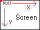
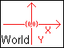

Objektit : komennot
| KUVAUS |
|
Asettaa objektin haluttuun sijaintiin. Voit esimerkiksi siirtää pelihahmon sen alkupaikkaan. Huomaa, että koordinaatisto pelimaailmassa on erilainen kuin ruudulla:   Keskus on nolla, ja koordinaatit voivat olla myös negatiivisia. Viime kädessä kamera kuitenkin päättää mihin kohtaan objektit piirretään. Z-arvon muuttaminen on edistyneemmille käyttäjille. Sen avulla voidaan teeskennellä syvyysvaikutelmaa, mikä saa objektin piirtymään sijaintinsa puolesta perspektiivissä taustaa vasten. Positiiviset Z-arvot tuovat objektia "lähemmäs kameraa", ja negatiiviset loitontavat sitä. |
| KÄYTTÖ | |
|
Katso myös: SCREENPOSITIONOBJECT, CLONEOBJECTPOSITION, CLONECAMERAPOSITION
| ESIMERKKI | |
|
<<TAKAISIN